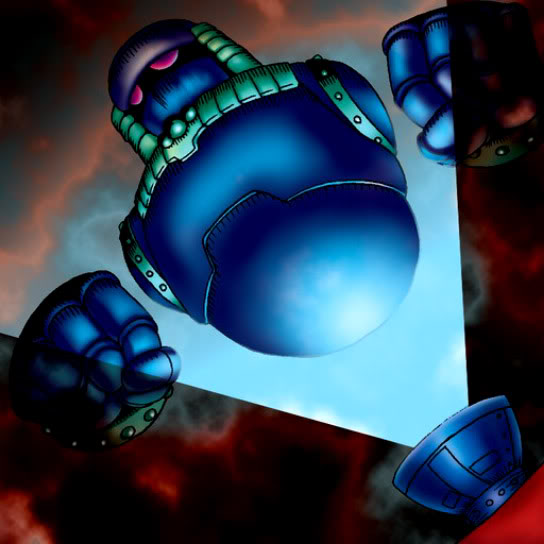

Holograph

STATS
ATK: 1100
DEF: 700DECK COST
Deck Cost per Card: 18Fusion List (15 Possible Fusions)
- Holograph + Air Marmot of Nefariousness = Dice Armadillo
- Holograph + Doron = Cyber Soldier
- Holograph + Enchanting Mermaid = Misairuzame
- Holograph + Frenzied Panda = Dice Armadillo
- Holograph + Fusionist = Giga-tech Wolf
- Holograph + Gate Deeg = Dice Armadillo
- Holograph + Griffore = Dice Armadillo
- Holograph + Lesser Dragon = Metal Dragon
- Holograph + One-Eyed Shield Dragon = Metal Dragon
- Holograph + Sectarian of Secrets = Disk Magician
- Holograph + Sword Arm of Dragon = Cyber Saurus
- Holograph + Trap Master = Cyber Soldier
- Holograph + Unknown Warrior of Fiend = Cyber Soldier
- Holograph + Wicked Dragon with the Ersatz Head = Metal Dragon
- Holograph + Yamatano Dragon Scroll = Metal Dragon